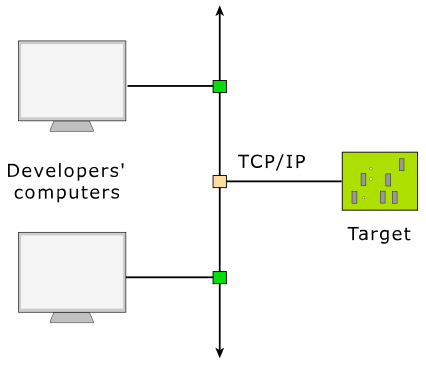
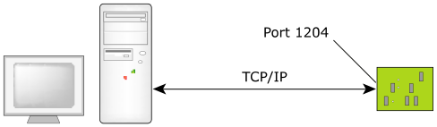

If the host and the target are connected via some form of TCP/IP connection, the debugger and agent can use that connection as well. Two types of TCP/IP communications are possible with the debugger and agent: static port and dynamic port connections (see below).
The QNX OS target must have a supported Ethernet controller. Note that since the debug agent requires the TCP/IP manager to be running on the target, this requires more memory.
This need for extra memory is offset by the advantage of being able to run multiple debuggers with multiple debug sessions over the single network cable. In a networked development environment, developers on different network hosts could independently debug programs on a single common target.

TCP/IP static port connection
For a static port connection, the debug agent is assigned a TCP/IP port number and listens for communications on that port only. For example, the pdebug 1204 command specifies TCP/IP port 1204:

If you have multiple developers, each developer could be assigned a specific TCP/IP port number above the reserved ports 0 to 1024.
TCP/IP dynamic port connection
For a dynamic port connection, run qconn.